官服 HTML 回放 · 纯安卓适配
下载 hotfix34 · PDF 版教程 · 离线 HTML · 本版更新说明 · 非 Root 安卓与 iOS 方案 · ← 返回仓库首页
2026-10-21 / Android 2026.10.21-hotfix34 / 本页是纯安卓适配（控制台、游戏、浏览器都在同一个安卓系统里）的完整配置图文教程，取代旧版安卓教程和旧版 Mac 适配。Windows 电脑请用另一套 Windows + MuMu 一体版。源码在 source/android-native/。
| 路线 | 适用 | 状态 |
|---|
| A. Mac + MuMu 模拟器 Pro | Apple Silicon Mac | 推荐；hotfix9–11 实测 11 场，本版未在 MuMu 重测 |
| B. 已 Root 的安卓手机 | ARM64，Android 10–12 | 未实测 |
| C. 非 Root 手机 + 虚拟大师 | 外层 8 GB 内存以上 | 实验性：完整播放过 2 次，之后多次因虚拟机调试器不稳定失败 |
本项目把 RoyaleAPI「完整 Replay 详情页」的 HTML 转成指令，在锁定版本的腾讯安卓客户端里用游戏自己的战斗引擎重新跑一遍。它不是视频播放器，也不是 Supercell 官方产品。所有操作都在安卓系统里完成：控制台 APK、游戏、浏览器装在同一个安卓环境中，不需要电脑后台服务。
本教程的截图均为实机截图，来自「非 Root 外层系统 + 虚拟大师 Android 12 客体」测试环境；你的游戏昵称、公会名已打码。MuMu 和已 Root 手机里的控制台界面与截图相同，只是外层系统不同。
选择你的路线：
- Mac（Apple Silicon）：用 MuMu 模拟器 Pro 运行安卓 12 实例，装本控制台。第 3 节。原来的 macOS 桌面版（源码 Skill）已停止维护，改用这条路线。
- 已 Root 的 ARM64 安卓手机 / 平板：直接安装。第 4 节。
- 没有 Root 的安卓手机：在手机上用「虚拟大师」开一个带 Root 的安卓 12 虚拟机，在虚拟机里安装。第 5–7 节。
- Windows：使用另一套独立适配 Windows + MuMu 一体版（MuMu Windows 版需要翻译层）。本教程不适用。
- iPhone / iPad：没有本机方案，只能远程观看一台运行本项目的电脑或手机，见《非 Root 安卓与 iOS：可能的播放方法》。
1. 下载清单
本次发布页：replay-sync-20261021-hotfix34
本项目提供的文件：
- Android-Replay-20261021-hotfix34.apk：安卓回放控制台。已内置全部运行依赖：Python 运行时、HTML 解析器、本机编译器与调试器（LLDB）。不需要另装 Python、NDK 或电脑工具。
- Android-Replay-Complete-20261021-hotfix34.zip：完整资料包。含上面的 APK、浏览器桥接脚本、本教程（PDF / HTML / Markdown 与全部截图）、安卓源码快照、第三方下载清单、组件许可和校验和。
- royale-replay-phone.user.js：Edge 浏览器桥接脚本（资料包里也有）。
- SHA256SUMS.txt：下载后核对文件是否完整。
需要从官方渠道自行获取的第三方软件（版权原因，本项目不打包、不转发）：
- MuMu 模拟器 Pro（Mac）：mumu.163.com/mac
- 虚拟大师（手机虚拟机）：virtualmaster.app，或手机的官方应用商店。
- Microsoft Edge（安卓）：Google Play，或 Microsoft 官网。
- 篡改猴 Tampermonkey：在 Edge 的扩展页面安装，见第 9 节。
- 腾讯版《皇室战争》客户端：腾讯官方渠道。必须是本项目审计过的版本（见第 2 节）。
2. 开始前的共同要求
1. 游戏版本必须完全匹配。包名 com.tencent.tmgp.supercell.clashroyale，审计版本 38.4.2。控制台会校验游戏库 libg.so 的 SHA-256，不匹配就拒绝运行，不会“试一试”：
c6b2482a2f1fbd2e15c99df7fb18ba3d5596b77b3a81930d3638241a3c37fe55
2. 安卓环境：ARM64，Android 10–12。实测为 Android 12。游戏、控制台、Edge 必须装在同一个安卓系统里。
3. Root：控制台要以调试器方式附加游戏进程，需要该安卓系统已有的 Root，并只授权给「安卓回放控制台」。本项目不提供提权或绕过手段。
4. 内存：运行游戏的那个安卓系统建议 ≥ 4 GB 可用内存。手机虚拟机路线下，外层手机建议 8 GB 内存以上（见第 5.2 节）。
5. 登录：游戏账号、RoyaleAPI 网站登录都由你本人完成。开始播放前让游戏停在空闲大厅，不要正在进行在线对局。
6. 网络：不需要改代理或 VPN。游戏和网站本身需要能联网。
3. 路线 A：Mac + MuMu 模拟器 Pro（原 Mac 适配）
旧的 macOS 桌面控制台需要在 Mac 上装 Python、命令行工具和 NDK，并在电脑端编译。现在改为：控制台直接装进 MuMu 的安卓系统里运行，Mac 上什么都不用装，与手机用的是同一个 APK。
1. 从 MuMu 官网 下载安装「MuMu 模拟器 Pro」（Apple Silicon 原生运行 ARM64 安卓，无需翻译层）。
2. 打开 MuMu，在多开管理中新建或使用一个 Android 12 实例并启动。
3. 在该实例的「设置 → 其他 / 高级」中开启 Root 权限，按提示重启实例。具体菜单名称以你的 MuMu 版本为准。
4. 在实例里安装腾讯版游戏 38.4.2，登录账号，进入大厅确认能正常显示。
5. 安装控制台：把 Android-Replay-20261021-hotfix34.apk 拖进 MuMu 窗口，或在 Mac 终端用 MuMu 自带 adb 安装。之后的步骤与第 8 节相同。
6. 第一次打开控制台时，Root 管理器会询问是否授权「安卓回放控制台」，选择允许。
已验证范围：MuMu Pro（Mac）安卓 12 实例上，hotfix9–11 完成过 11 场、24 次完整播放，其中 10 场终局与网页完全一致；不一致的一场由骷髅帝王随机技能造成，见 hotfix11 说明。hotfix12–25 的改动主要针对手机虚拟机，尚未在 MuMu 上重新完整播放验证；升级后请先用一场短局确认。
4. 路线 B：已 Root 的安卓手机
1. 把 APK 拷到手机上安装。只对你使用的文件管理器临时允许“安装未知应用”。
2. 安装腾讯版游戏 38.4.2，登录并进入大厅。
3. 打开控制台，在 Magisk / KernelSU 等 Root 管理器的弹窗里只允许这个应用。
4. 之后按第 8 节操作。
实体 Root 手机未经本项目实测。不同内核和 ROM 的调试支持差别很大，失败时请导出诊断（第 11 节）。
5. 路线 C：没有 Root 的手机 + 虚拟大师
思路：外层手机保持不 Root，用「虚拟大师」在手机里开一个自带 Root 的 Android 12 虚拟手机。游戏、控制台、Edge 全部装在虚拟手机里。
状态：实验性。测试环境为外层非 Root 的 Android 14（用户版系统，无法获得 Root），里面运行虚拟大师 3.2.77 + Android 12 ROM（1039）。
- 成功：hotfix21 与 hotfix24 各完整播放 1 场（02CY92GGGCLG），终局六塔与网页完全一致；hotfix24 起“读取资源”从约 2 分钟缩短到约 6 秒。
- 失败：之后在同一虚拟机里多次失败，原因都在虚拟机这一层，而不是回放规则：调试器无法暂停游戏或无法执行原生函数调用，同时虚拟大师弹出“core process crashed in the VM”。较长、需要反复预演的对局更容易遇到。
- 建议：能用 Mac + MuMu 就优先用 MuMu。在虚拟大师里先用短局（几十条指令、无英雄技能）试播。
5.1 安装与激活虚拟大师
激活流程（按顺序，每一步都由你本人在手机上操作）：
1. 安装：从 虚拟大师官网 或手机官方应用商店下载安装虚拟大师（我们测试的版本为 3.2.77，包名 com.clone.android.dual.space）。
2. 首次启动的解锁页：部分网盘分发的版本在第一次打开时会显示一个“输入密码”的解锁页，提示密码从发布者的网盘页面获取、“不定期更新”。这类版本是第三方重新打包的，官方版本没有这一步。请向你获取安装包的来源索取当前密码并自行输入；本教程不公开该密码（它会变化，公开后很快失效，也不应传播非官方分发版）。能用官方版本时优先用官方版本。
3. 同意协议：阅读并同意用户协议与隐私政策（由你本人确认，本项目不代为同意）。
4. 登录 / 会员：按官方指引完成账号登录。若带 Root 的 ROM、64 位 ROM 或更大内存需要会员，请通过官方渠道开通。
5. 授予权限：在系统弹窗中允许“显示在其他应用上层”（虚拟大师悬浮球需要）、“文件和媒体 / 存储”（导入 APK 需要）、通知。位置权限与本项目无关，可拒绝。
6. 完成标志：首页出现“新建虚拟机 / ROM 列表”，屏幕边缘出现虚拟大师的悬浮球。
5.2 创建 Android 12 虚拟手机
1. 在虚拟大师中新建虚拟机，选择 Android 12（64 位）ROM。我们使用的是 Android 12 ROM 1039。
2. 内存选 4 GB 或以上，存储 ≥ 16 GB。游戏安装包约 1.5 GB，解压后更大。
3. 在虚拟大师首页的虚拟机卡片上点 Enter VM 启动；卡片下方三个按钮依次是关机、声音和虚拟机设置。第一次启动会显示「Phone is starting…」，等待进入桌面。
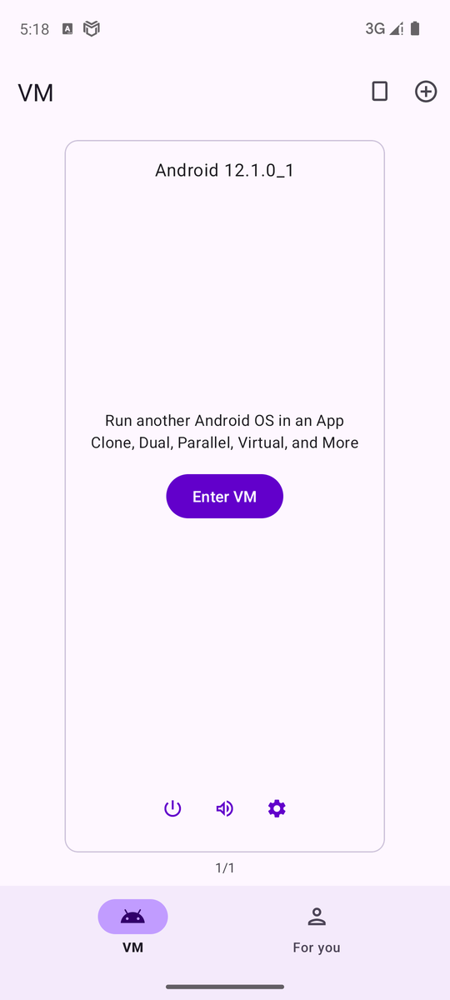
虚拟大师首页：Android 12 虚拟机与 Enter VM虚拟大师：虚拟手机启动中内存不够是最常见的失败原因。我们最初的测试手机只有 4 GB 内存，虚拟机里一跑游戏就反复弹出“core process crashed in the VM”，并自动重启虚拟机。把外层内存加到 8 GB 后恢复稳定。出现下图提示时，先关掉外层手机的其他应用，或换内存更大的手机，不要反复重装。
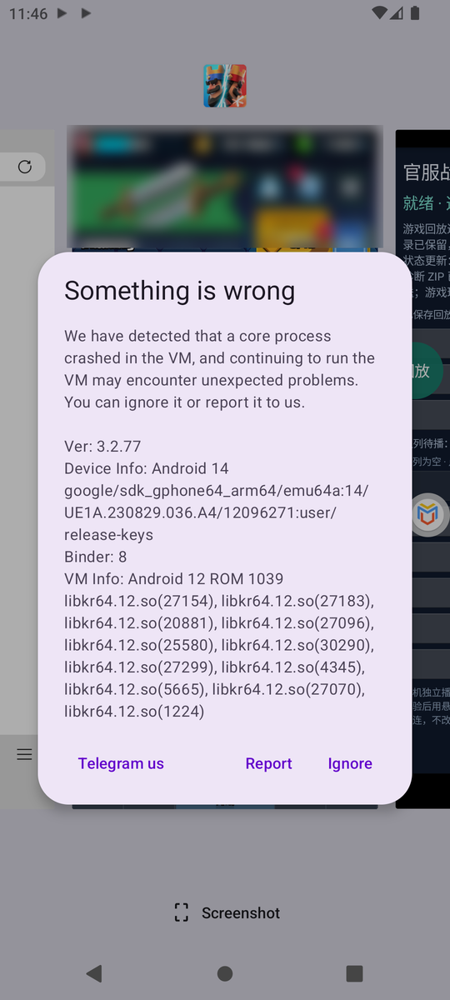
内存不足时虚拟大师的崩溃提示配置清单（我们实测可用的组合）：
| 项目 | 设置 |
|---|
| ROM | Android 12，64 位（ROM 1039） |
| 虚拟机内存 | 4 GB 及以上 |
| 虚拟机存储 | 16 GB 及以上，至少留 4 GB 空闲 |
| Root | 开启（虚拟机内有 Magisk + Superuser） |
| 外层手机内存 | 8 GB 及以上 |
| 网络 | 与外层手机相同，无需额外代理设置 |
5.3 打开虚拟手机的 Root
1. 在虚拟大师的虚拟机设置（或虚拟机内的「VM Settings」应用）中，打开 Root 开关，按提示重启虚拟机。
2. 重启后，虚拟机桌面会出现 Magisk 与 Superuser 两个应用，说明 Root 已就绪。下图为我们测试用的虚拟手机桌面：Edge、Magisk、Superuser、VM Settings、安卓回放控制台、部落冲突·皇室战争都在里面。
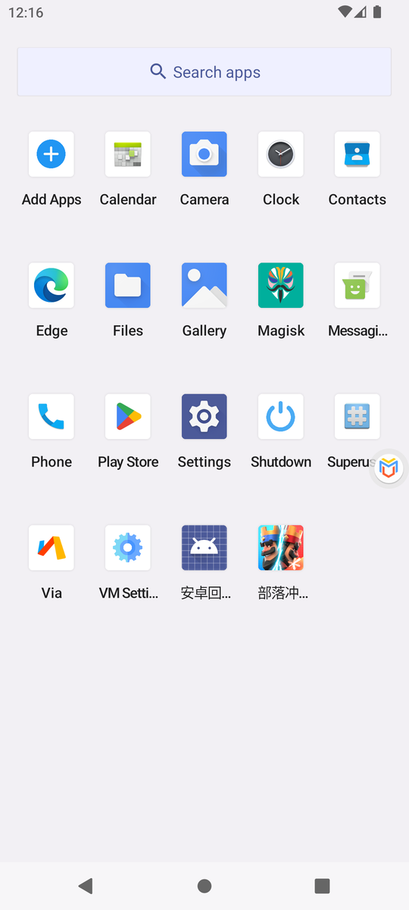
虚拟手机桌面：Root 管理器与全部应用5.4 把安装包导入虚拟手机
虚拟手机和外层手机的存储是分开的，需要用虚拟大师的「导入」把 APK 送进去：
1. 先在外层手机下载好 APK（控制台、游戏、Edge）。
2. 点屏幕边缘虚拟大师的悬浮球，展开菜单，点 Import（导入）。菜单里还有 Home（回到虚拟桌面）、Back、Recents、Switch VM、Shutdown 等。
3. 点导入页右下角的文件夹按钮，从外层手机的下载目录选择 APK。导入后虚拟大师会自动在虚拟手机里安装。
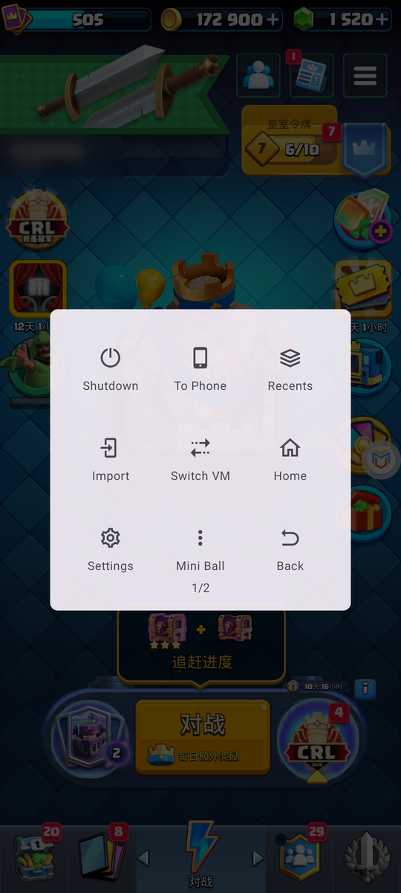
悬浮球菜单：Import 与 Home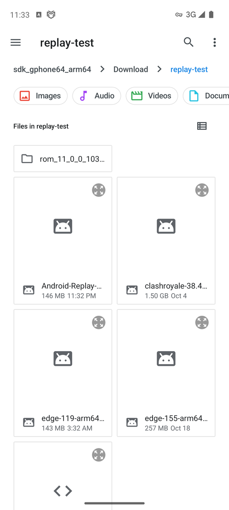
从外层手机选择要导入的 APK注意：
- 虚拟手机的空间和外层手机共用。出现“Install failed insufficient storage”时，先删掉外层手机下载目录里已经导入过的安装包（游戏安装包约 1.5 GB），再重新导入。
- 导入记录长时间停在“Copying file 100%”、新的导入一直不开始时：在外层手机的最近任务里关闭虚拟大师，重新打开、进入虚拟机后再导入一次。
- 装完后用「长按应用图标 → App info」拉到最下方核对版本号（例如 version 2026.10.21-hotfix34），不要只看导入记录。
6. 在虚拟手机里安装游戏
1. 导入并安装腾讯版游戏 38.4.2。
2. 在虚拟手机里打开游戏，登录账号，等待资源下载完成，确认能稳定进入大厅。游戏本身闪退或黑屏时，先解决游戏问题（内存、ROM），不要继续部署。
3. 游戏内弹出的活动页用返回键关闭，停在大厅。
7. 在虚拟手机里安装控制台与 Edge
1. 导入并安装 Android-Replay-20261021-hotfix34.apk（安卓回放控制台）。升级时直接覆盖安装，不要卸载或清除数据，否则队列和记录会丢失。
2. 导入并安装 Microsoft Edge（安卓 ARM64 版）。
3. 打开控制台。屏幕下方出现“安卓回放控制台 was granted Superuser rights”表示 Root 授权成功；若 Superuser 弹出询问，只允许这个应用。
4. 第一次播放前，系统会请求“显示在其他应用上层”（悬浮窗）权限，只给安卓回放控制台开启。
8. 第一次播放
控制台主界面（下图）从上到下是：状态、已保存回放、打开 RoyaleAPI 网页、选择 HTML 并播放、添加多个 HTML 到队列、待播队列、播放下一个、倍速、重放、导出诊断等。
1. 先打开游戏并停在大厅。
2. 在控制台点「选择 HTML 并播放」，选择从 RoyaleAPI 完整 Replay 详情页保存的 HTML；也可以用第 9 节的浏览器一键发送。
3. 控制台依次显示：读取资源 → 校准初始手牌 → 整局预演 → 往返校验 → 等待游戏前台加载 → 播放中。
4. 预演会把终局六座塔的血量与网页逐塔对比（网页上左右公主塔的顺序不一定和场地一致，程序只在血量能证明时交换左右），并标注：完全一致 / 终局近似（被摧毁的塔相同）/ 仅胜负相同 / 不符 / 无法完整比对（某座塔缺少网页数据或模拟记录，不当作不一致）。
5. 英雄技能目标必须完全一致：技能有多个合法目标时，只采用整局终局塔血与网页完全一致的那个分支，绝不用“最接近”的分支代替；找不到就不播放。
6. 随机种子只在卡组含骷髅之王或猎人时搜索（这两张卡的技能或弹道有已知随机性）。其他对局一律保留原种子，终局不一致时如实标出，不会因为塔血不同就去换种子。搜索时最多尝试 60 个种子，可随时点「停止匹配，用当前最接近的开播」；放宽的只是随机种子，技能目标仍要求完全一致。
7. 预演通过后会自动切到游戏，加载对战画面，确认游戏实际在步进后悬浮卡自动收起。
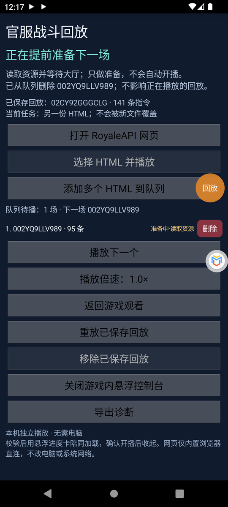
提前准备中：读取资源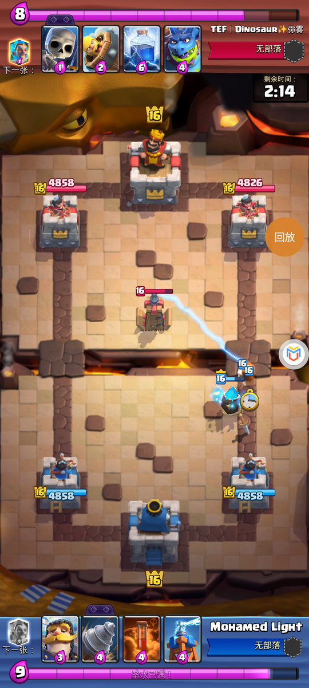
回放进行中（游戏画面）耗时参考（虚拟大师 Android 12）：读取资源约 6 秒（旧版约 2 分钟），校准与整局预演约 1–2 分钟，加载对战画面约 20–40 秒；需要尝试随机种子时，每个种子约 10 秒。在 MuMu 上更快。
播放中可使用游戏自带的暂停和倍速。对局结束后：
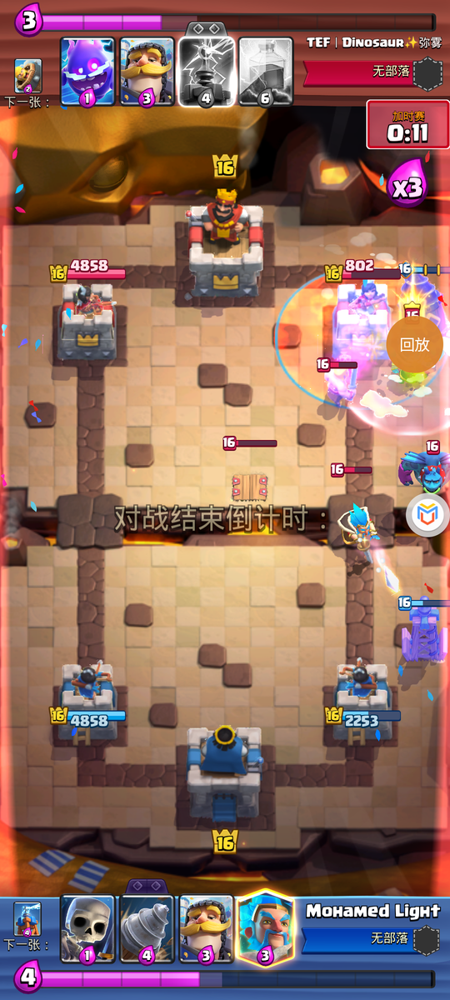
对局结束倒计时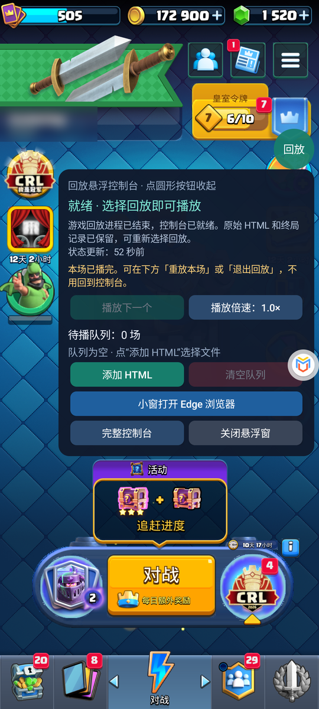
播完后在游戏里直接选择：重放本场 / 退出回放播完后，游戏会被安全地重启并回到大厅（当前采用“核验归属 → 释放 → 重新打开客户端”的方式，不是免重启返回）。之后可以在悬浮面板或控制台选择「重放本场」「退出回放」或播放队列的下一场。
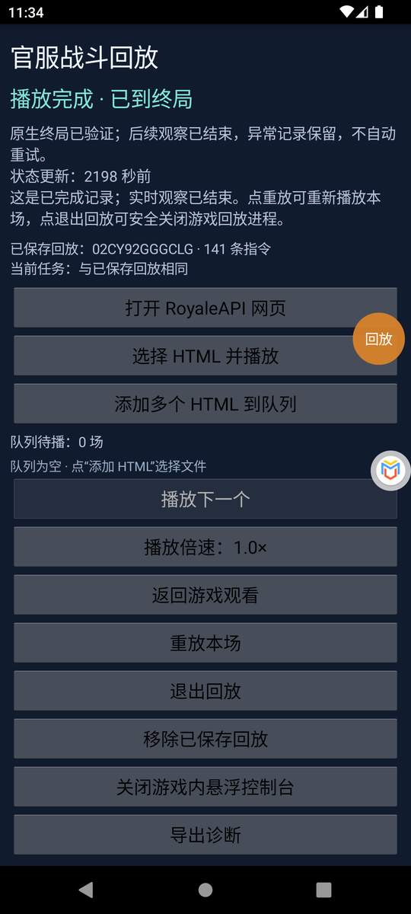
控制台：播放完成 · 已到终局9. 游戏内悬浮控制台与 Edge 浏览器桥接
9.1 悬浮控制台
控制台在游戏上方显示一个圆形「回放」按钮，点一下展开面板，再点收起；按住可拖动。面板中可以：
- 播放下一个、调整倍速；
- 添加 HTML、删除 / 置顶 / 清空队列；
- 「小窗打开 Edge 浏览器」（hotfix22 新增）：把 Edge 以小窗浮在游戏下半屏打开，保留你在 Edge 里的 Google / RoyaleAPI 登录；
- 打开完整控制台、关闭悬浮窗。
游戏大厅中的悬浮控制台（含「小窗打开 Edge 浏览器」）队列中的回放已提前准备就绪
9.2 安装桥接脚本
1. 在 Edge 中打开「设置 → 扩展」，安装并启用 Tampermonkey（篡改猴）。权限提示请自己核对，不需要 Cookie、历史记录或代理权限。
2. 在篡改猴中「创建新脚本」，用 royale-replay-phone.user.js 的完整内容替换默认示例，保存。
3. 脚本只在 https://royaleapi.com/replay?* 上生效。登录 RoyaleAPI（你本人完成），打开一场对局的 Replay 详情页并刷新。
9.3 一键发送回放
1. Replay 详情页右下角出现「▶ 在安卓控制台播放」。点击后 Edge 会询问是否打开外部应用「安卓回放控制台」，点 Open（打开）。
2. 回放直接进入游戏内悬浮面板，显示回放编号和指令数，可选「立即播放 / 加入队列 / 忽略」。收到链接本身不会自动播放，必须你点按钮。
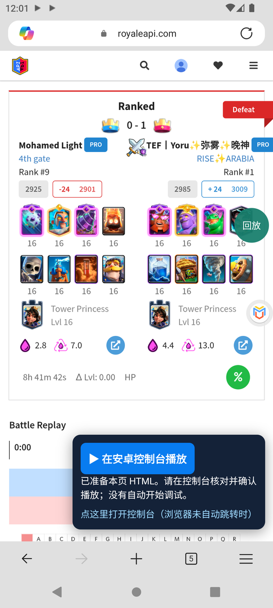
RoyaleAPI 详情页上的桥接按钮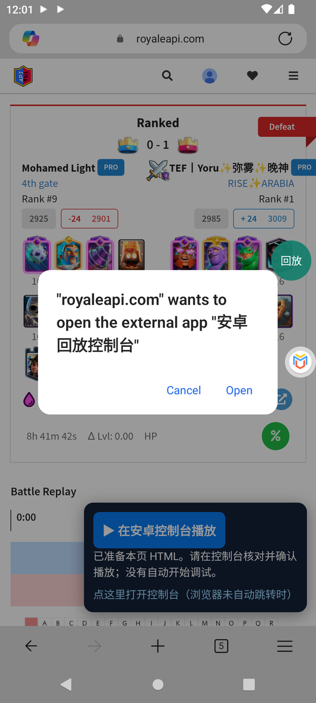
Edge 询问是否打开控制台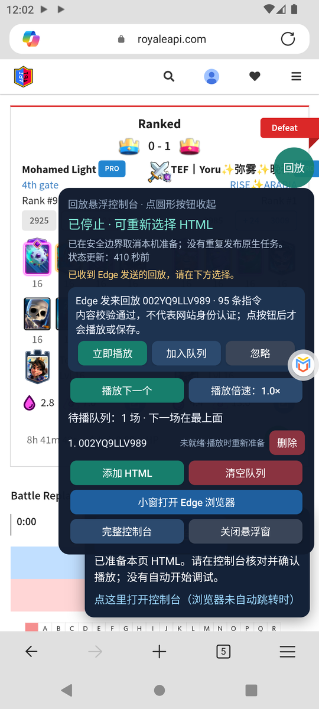
悬浮面板收到 Edge 发来的回放9.4 队列与提前准备
- 加入队列的回放会在游戏处于大厅时自动提前准备，每行右侧显示状态：等待准备 / 准备中·读取资源 / ✓ 已就绪 / 未就绪·播放时重新准备。
- 已就绪的回放点「播放下一个」后只需加载画面即可开播。
- 提前准备只做准备，从不自动开播。
- 若准备期间游戏被系统关闭（手机虚拟机内存紧张时常见），该行显示“未就绪·播放时重新准备”，点「播放下一个」会重新打开游戏并准备。
10. 卡住时：重置所有回放进程（防呆按钮）
hotfix34 新增。当状态一直停在“准备中 · 正在启动本机任务”、或提示“旧回放现场尚未释放”而不能播放时使用。常见原因是准备过程中虚拟机或模拟器被重启，留下了一份无人跟进的任务记录。
- 位置：完整控制台最下方「重置所有回放进程（卡住时用）」，以及悬浮面板里的「重置所有回放进程」。
- 防误触：需要在 5 秒内连点两次才会执行。
- 它会：结束所有回放执行进程，强制关闭游戏（同时清除游戏里残留的回放组件），把当前任务记录归档。
- 它不会：删除队列、已保存回放、历史记录或诊断文件。
- 重置后重新打开游戏，进入大厅，再点「播放下一个」。
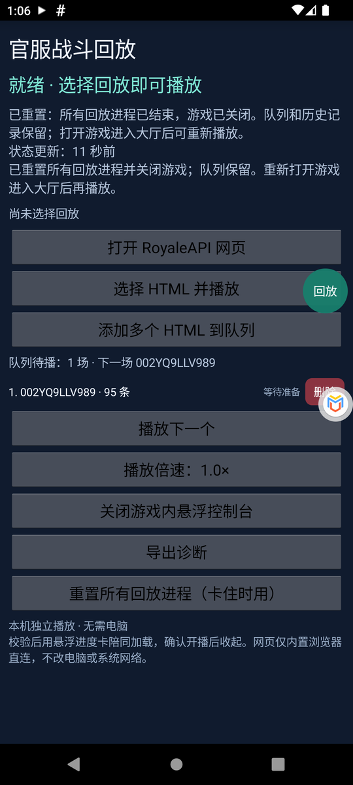
重置后控制台恢复为“就绪”11. 升级
1. 下载新版 APK，核对 SHA256SUMS.txt。
2. 覆盖安装（虚拟大师里用「导入」）。不要卸载，不要清除数据。
3. 覆盖安装会结束正在运行的控制台与悬浮窗，重新打开控制台即可。若当时有“已就绪”的回放，会显示“未就绪·播放时重新准备”。
4. 升级 Edge 桥接脚本时，用新文件完整替换旧脚本内容。
12. 出错时：导出诊断
1. 在控制台底部点「导出诊断」，选择保存位置（如 Download），等待“已保存（N 份记录）”提示。
2. 把 ZIP 私下发给维护者，并附上控制台版本号和错误截图。
3. 诊断 ZIP 不含原始 HTML、游戏 APK 或浏览器 Cookie，但含本机路径、进程信息和解析后的回放记录，不要公开分享。
4. 不要反复点播放、不要清除数据。控制台不会自动重试原生操作，现场记录保留用于排查。
13. 常见问题
- “core process crashed in the VM”、虚拟机自动重启：外层内存不足。关闭其他应用、给虚拟机更多内存，或换 8 GB 以上内存的手机。
- 准备停在“等待游戏启动并进入空闲大厅”约 2 分钟后取消：游戏没在运行或没进大厅。先打开游戏进入大厅，再点「播放下一个」。
- 一直“准备中 · 正在启动本机任务”：用第 10 节的重置按钮。
- “自动恢复未通过归属检查：失败现场代际不一致或调试器未退出”、游戏停在加载界面：在虚拟大师里见过一次（hotfix34），原因尚未查明。先用重置按钮恢复，再重新打开游戏播放，并导出诊断发给维护者。
- “游戏回放进程已结束”：游戏进程在准备期间退出了（多半是被系统回收内存）。重新打开游戏后再播。
- “Install failed insufficient storage”：虚拟手机空间不足，删除 Imports 里的旧 APK 副本。
- 游戏库校验失败：游戏不是 38.4.2 审计版本，或被修改过。请从腾讯官方渠道获取匹配版本，不要关闭校验。
- “与网页不符 / 终局近似”：如果卡组含骷髅之王或猎人，可能是网页缺少的随机种子造成的；其他对局不会换种子，请导出诊断，诊断里的 page-comparison.json 逐塔列出网页血量、模拟血量和判断依据。
- “终局无法完整比对”：某座塔缺少网页数据或模拟记录。这不代表不一致，可以照常播放；请导出诊断以便补齐记录。
- “本机调试器无法执行原生函数调用” / “stop for observation failed”：虚拟机里调试器不稳定。用重置按钮恢复后再试，或改用 MuMu。
- Edge 点了按钮没反应：再点面板里的「点这里打开控制台」；或保存完整 HTML，在控制台用「选择 HTML 并播放」导入。
14. 本版修复了什么（hotfix12–34）
为了让回放在虚拟大师里跑通，并缩短准备时间：
- 兼容虚拟大师对内存映射文件的异常输出：截断行、重复段、空行、乱序的匿名映射。只跳过能证明无害的行，且不把它们当作可读内存；其他异常仍停止。
- 虚拟机里调试器找不到 mmap 时，向调试器登记经过核验（文件哈希、内存字节、地址三者一致）的系统 libc，使原生调用可以执行。
- 修正 /data/user/0 与 /data/data 符号链接导致的“取消后无法释放 / 无法退出”。
- 修正虚拟机里 /system/bin/am 无法直接执行导致的“重放本场 / 退出回放”失败。
- 游戏不在运行时，不再误报“游戏进程检查未通过”。
- 读取资源提速：减少重复解析 0.5 MB 进程映射表，缓存 30 MB 游戏库的哈希；虚拟大师里从约 2 分钟降到约 6 秒，安全检查不减少。
- 悬浮控制台始终显示「小窗打开 Edge 浏览器」按钮。
- 出错原因写入诊断文件，即使虚拟机丢掉了命令输出也能看到。
- 新增「重置所有回放进程」防呆按钮（两次确认）。
- 游戏没运行时点播放会先自动打开游戏；准备失败后不再自动反复重试。
- 长对局的读取上限与虚拟机加载场景的等待时间放宽。
- 随机种子搜索只用于含骷髅之王或猎人的卡组，可随时停止并用最接近的结果开播；技能目标始终要求完全一致。
- 终局比对统一为同一套逐塔规则，缺少记录时标为“无法完整比对”，不再误判为不符；网页左右公主塔顺序反了时按血量证据纠正（修复 02RYPY228YCQ 等对局被误判、无法播放）；诊断新增 page-comparison.json。
15. 安全与许可
- 本项目不修改、不重新签名游戏 APK，不提供 Root、破解或绕过手段，不收集账号或 Cookie。
- 控制台只读取已核验的游戏版本，所有原生调用前都会核对进程身份与代码指纹。
- 第三方组件许可见资料包中的《组件来源与许可》。游戏、MuMu、虚拟大师、Edge、篡改猴版权归各自所有者。
- 本工具仅用于观看你有权访问的对局回放，请遵守游戏与网站的服务条款。